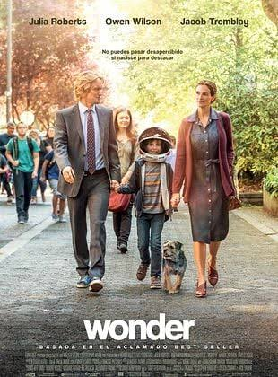

August "Auggie" Pullman
Interpretado por Jacob Tremblay
Protagonista de la película. Es un niño inteligente, curioso y aficionado a la ciencia. Aprende a enfrentar los prejuicios y a confiar en sus capacidades.

REALISTA · DRAMA · EMPATÍA
August Pullman es un niño con diferencias faciales que, después de estudiar en casa durante años, comienza a asistir a una escuela. Allí tendrá que enfrentar miradas, prejuicios y situaciones difíciles, mientras descubre el valor de la amistad, la empatía y la aceptación.
Wonder
2017
Stephen Chbosky
Stephen Chbosky, Steve Conrad y Jack Thorne
Estados Unidos
113 minutos
Drama familiar
La novela Wonder, de R. J. Palacio, publicada en 2012
Jacob Tremblay, Julia Roberts, Owen Wilson, Izabela Vidovic y Noah Jupe
Marcelo Zarvos
August Pullman, conocido como Auggie, es un niño de diez años que nació con diferencias faciales y ha pasado por numerosas cirugías. Debido a sus tratamientos médicos, ha recibido educación en casa durante gran parte de su infancia.
Sus padres, Isabel y Nate, deciden que ha llegado el momento de que Auggie asista a una escuela convencional. Aunque el niño siente miedo e inseguridad, comienza una nueva etapa en Beecher Prep, donde conocerá a compañeros y profesores.
Durante sus primeros días, Auggie enfrenta miradas incómodas, comentarios crueles y situaciones de acoso por parte de algunos estudiantes. Sin embargo, también encuentra personas dispuestas a conocerlo más allá de su apariencia física.
Uno de sus primeros amigos es Jack Will, aunque su relación atraviesa momentos difíciles. También conoce a Summer, una compañera que decide acercarse a él y tratarlo con respeto.
Mientras Auggie aprende a desenvolverse en la escuela, la película también muestra las experiencias de su hermana Via y de otros personajes, permitiendo comprender cómo cada integrante de la familia enfrenta sus propios desafíos.
Con el paso del tiempo, Auggie demuestra su inteligencia, sentido del humor y valentía. Gracias a sus experiencias y al apoyo de quienes lo rodean, comienza a construir amistades verdaderas y a ganar confianza en sí mismo.
Al finalizar el año escolar, Auggie recibe un reconocimiento por su fortaleza y su influencia positiva en la comunidad. La historia transmite un mensaje sobre la importancia de la empatía, la bondad y el respeto hacia las diferencias.
Interpretado por Jacob Tremblay
Protagonista de la película. Es un niño inteligente, curioso y aficionado a la ciencia. Aprende a enfrentar los prejuicios y a confiar en sus capacidades.
Interpretada por Julia Roberts
Madre de Auggie. Es una mujer cariñosa y dedicada que ha acompañado a su hijo durante sus tratamientos y su educación.
Interpretado por Owen Wilson
Padre de Auggie. Tiene un carácter comprensivo y utiliza el humor para ayudar a su hijo a superar momentos difíciles.
Interpretada por Izabela Vidovic
Hermana mayor de Auggie. Lo quiere profundamente, aunque también enfrenta sentimientos de soledad y busca construir su propia identidad.
Interpretado por Noah Jupe
Compañero de escuela que se convierte en amigo de Auggie. Su relación atraviesa conflictos, pero aprende la importancia de la lealtad y la amistad.
Interpretada por Millie Davis
Compañera de Auggie que lo trata con amabilidad y respeto. Su comportamiento demuestra que una amistad auténtica no depende de las apariencias.
Extraordinario presenta características del realismo porque desarrolla situaciones creíbles relacionadas con la vida escolar, la convivencia familiar, la discriminación y la aceptación personal. Aunque es una historia de ficción, sus conflictos representan experiencias que pueden ocurrir en la sociedad. La película invita a reflexionar sobre la importancia de respetar las diferencias y comprender los sentimientos de los demás.
Nuestra siguiente lectura presenta a un niño que desarrolla un vínculo especial con una alcancía y descubre que los sentimientos pueden ser más importantes que el dinero.